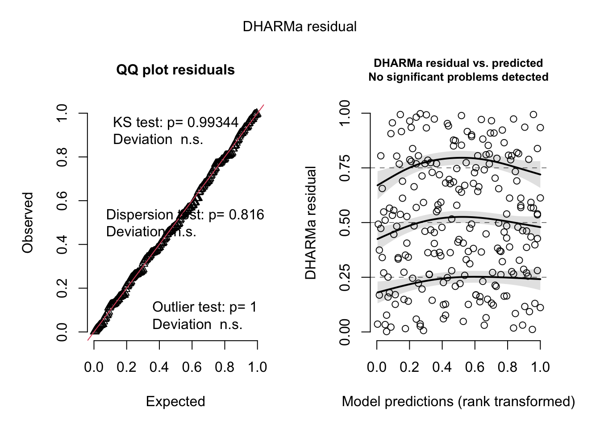

library(tidyverse)
library(here)
library(janitor)
library(dplyr)
library(lubridate)
library(MuMIn)
library(DHARMa)
library(ggeffects)
sst <- read.csv(here("data", "SST_update2023.csv"))
nest_boxes <- read.csv(here("data", "occdist.csv"))ENVS 193DS Final
Repository: https://github.com/chloecarlstrom/ENVS-193DS_spring-2025_final
Reading in data/packages
Problem 1. Research Writing
a.
b.
c.
Problem 2. Data Visualization
a. Cleaning and summarizing
sst_clean <- sst %>% #naming new object from sst data frame
mutate( #function to change data
year = factor(year(date)), #making year as a factor from date column
month = factor(month(date, label = TRUE), ordered = TRUE)) %>% #making a month factor from date
group_by(year, month) %>% #grouping by year and month
summarise(mean_monthly_sst = mean(temp, na.rm =TRUE)) %>% #using month data to find mean monthly sst
ungroup() %>% #ungrouping data
select(year, month, mean_monthly_sst) %>% #showing only selected columns
filter(year %in% c("2018", "2019", "2020", "2021", "2022", "2023")) `summarise()` has grouped output by 'year'. You can override using the
`.groups` argument.slice_sample(sst_clean, n = 5)# A tibble: 5 × 3
year month mean_monthly_sst
<fct> <ord> <dbl>
1 2023 Oct 17.4
2 2019 Dec 15.0
3 2020 Jul 17.0
4 2022 Aug 17.5
5 2022 Oct 17.9str(sst_clean)tibble [72 × 3] (S3: tbl_df/tbl/data.frame)
$ year : Factor w/ 42 levels "1982","1983",..: 37 37 37 37 37 37 37 37 37 37 ...
$ month : Ord.factor w/ 12 levels "Jan"<"Feb"<"Mar"<..: 1 2 3 4 5 6 7 8 9 10 ...
$ mean_monthly_sst: num [1:72] 15 14.3 13.5 12.8 13.6 ...b. Visualize the data
ggplot(data = sst_clean, aes(x = month, y = mean_monthly_sst, group = year, color = factor(year))) + #setting up data for figure, changing year to numeric
geom_line() + #line geometry
geom_point() + #point geometry
scale_color_manual(values = c("2018" = "lightblue", "2019" = "deepskyblue", "2020" = "dodgerblue3", "2021" = "royalblue1", "2022" = "blue2", "2023" = "darkblue")) + #coloring lines in gradient of single color
theme(
panel.background = element_blank(), #removing background
panel.grid = element_blank(), #removing grid lines
panel.border = element_rect(color = "black", fill = NA), #creating line around plot
axis.ticks = element_blank(), #removing axis ticks
legend.position = c(0.1, 0.9), #adding legend position inside box
legend.justification = c("left", "top") #formating legend position
) +
labs( #naming axes, legend
x = "Month",
y = "Mean Monthly sea surface temperature (C)",
color = "Year"
)Warning: A numeric `legend.position` argument in `theme()` was deprecated in ggplot2
3.5.0.
ℹ Please use the `legend.position.inside` argument of `theme()` instead.Problem 3. Data Analysis
a. Response variable
The 0s and 1s are used to denote if the species is present in the nest box with 1 being yes and 0 being no.
b. Purpose of study
The Swift Parrots are critically endangered and the other two species, Tree Martins and Common Starlings are their only nest competitors. Both exploit nest boxes, with Tree Martins being a native species and Common Starlings being introduced.
c. Difference in “seasons”
The years represent breeding seasons when the parrots bred at the study site. These breeding events are triggered by mast tree flowering events.
d. Table of models
4 models total:
| Model number | season | distance to forest edge | description |
|---|---|---|---|
| 1 | null model | ||
| 2 | X | X | saturated model |
| 3 | X | season and sp occupancy | |
| 4 | X | distance and sp occupancy |
e. Run the models
nest_boxes <- nest_boxes %>%
mutate(
season = factor(season) #making season into a factor
)
str(nest_boxes) #showing structure to ensure variables have correct form'data.frame': 227 obs. of 10 variables:
$ box : chr "boxrh00" "boxrh49" "boxrh55" "boxrh56" ...
$ box.occupant : chr "common starling" "common starling" "common starling" "common starling" ...
$ edge.distance: int 287 35 84 128 152 92 51 222 160 145 ...
$ season : Factor w/ 2 levels "2016","2019": 1 1 1 1 1 1 1 2 2 2 ...
$ eventID : chr "boxrh002016" "boxrh492016" "boxrh552016" "boxrh562016" ...
$ repeated.use : chr "no" "no" "no" "no" ...
$ sp : int 0 0 0 0 0 0 0 0 0 0 ...
$ cs : int 1 1 1 1 1 1 1 1 1 1 ...
$ e : int 0 0 0 0 0 0 0 0 0 0 ...
$ tm : int 0 0 0 0 0 0 0 0 0 0 ...#null model
model1 <- glm(sp ~ 1, #predictor and response variables
data = nest_boxes, #data frame
family = "binomial") #data form
#saturated model
model2 <- glm(sp ~ season + edge.distance, #predictor and response variables
data = nest_boxes, #data frame
family = "binomial") #data form
#model with season only
model3 <- glm(sp ~ season, #predictor and response variables
data = nest_boxes, #data frame
family = "binomial") #data form
#model with distance to edge only
model4 <- glm(sp ~ edge.distance, #predictor and response variables
data = nest_boxes, #data frame
family = "binomial") #data formf. Check the diagnostics
#diagnostics for each model
#model 1
plot(
simulateResiduals(model1)
)
#model 2
plot(
simulateResiduals(model2)
)#model 3
plot(
simulateResiduals(model3)
)
#model 4
plot(
simulateResiduals(model4)
)Warning in newton(lsp = lsp, X = G$X, y = G$y, Eb = G$Eb, UrS = G$UrS, L = G$L,
: Fitting terminated with step failure - check results carefully
g. Select the best model
AICc(
model1,
model2,
model3,
model4
) %>%
arrange(AICc) df AICc
model2 3 226.3133
model4 2 229.6716
model3 2 236.3744
model1 1 238.8318The best model as determined by the Akaike’s Information Criterion (AIC) was the saturated model with the combined effects of both season and distance from forest edge on nest box occupancy.
h. Visualize the model predictions
mod_preds <- ggpredict(model2,
terms = c("edge.distance", "season"))Data were 'prettified'. Consider using `terms="edge.distance [all]"` to
get smooth plots.ggplot() +
geom_point(data = nest_boxes,
aes(x = edge.distance, y = sp),
alpha = 0.3) +
geom_ribbon(data = mod_preds,
aes(x = x,
ymin = conf.low,
ymax = conf.high,
fill = group),
alpha = 0.2) +
geom_line(data = mod_preds,
aes(x = x, y = predicted, color = group), size = 1) +
scale_y_continuous(limits = c(0, 1)) +
labs(
x = "Distance to Forest Edge",
y = "Swift Parrot Nest Box Occupancy",
color = "Season",
fill = "Season"
) +
scale_fill_manual(
values = c(
"2016" = "slateblue1",
"2019" = "mediumorchid3"
)) +
scale_color_manual(
values = c(
"2016" = "darkslateblue",
"2019" = "darkmagenta"
))Figure 1. Predicted Swift Parrot nest box occupancy related distance to forest edge grouped by season Swift parrots have a higher probability of occupying nest boxes closer to the forest edge. Overall the probability of nest boxes being occupied was higher 2016 than 2019. Stojanovic, Dejan et al. (2021). Do nest boxes breed the target species or its competitors? A case study of a critically endangered bird [Dataset]. Dryad. https://doi.org/10.5061/dryad.83bk3j9sb
j. Calculate model predictions
ggpredict(model2, #model used
terms = c("edge.distance [0]", "season")) #setting distance to 0, adding season# Predicted probabilities of sp
season: 2016
edge.distance | Predicted | 95% CI
--------------------------------------
0 | 0.48 | 0.33, 0.64
season: 2019
edge.distance | Predicted | 95% CI
--------------------------------------
0 | 0.30 | 0.18, 0.44ggpredict(model2, #model used
terms = c("edge.distance [900]", "season")) #setting distance to 900, adding season# Predicted probabilities of sp
season: 2016
edge.distance | Predicted | 95% CI
--------------------------------------
900 | 0.12 | 0.06, 0.24
season: 2019
edge.distance | Predicted | 95% CI
--------------------------------------
900 | 0.06 | 0.03, 0.13k. Interpret your results
For Swift Parrots, the probability of nest box occupancy decreases with increasing distance to forest edge. At forest edge (0m) the probability of occupancy was 0.48 in 2016 (95% CI: [0.33, 0.64]) and 0.30 in 2019 (95% CI: [0.18, 0.44]). At 900m distance from forest edge, the probability of occupancy was 0.12 in 2016 (95% CI: [0.06, 0.24]) and 0.06 in 2019 (95% CI:[0.03, 0.13]). This could be due to the fact that Tree Martins may have outcompeted Swift Parrots for next boxes farther from forest edge, forcing them to occupy nest boxes closer to forest edge.